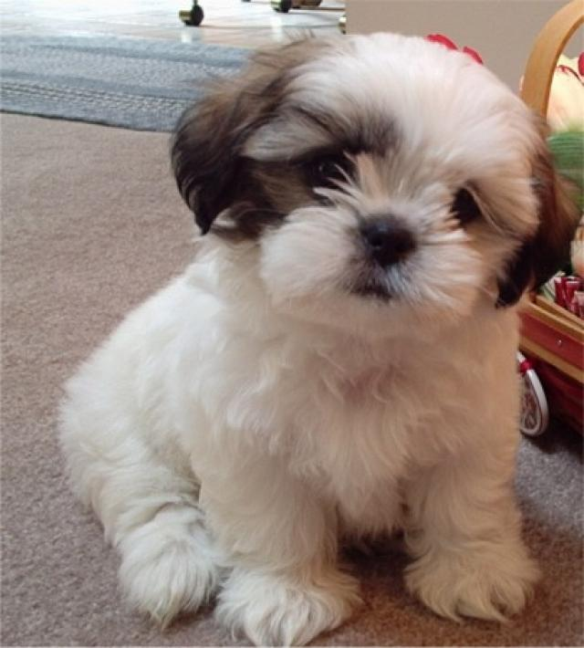
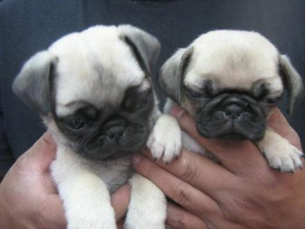
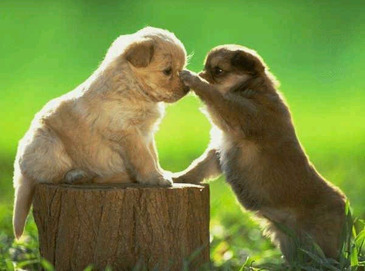

Razas de perros
Una raza de perro o raza canina es un grupo de perros que tienen características muy similares o casi idénticas en su aspecto o comportamiento o generalmente en ambos, sobre todo porque vienen de un sistema selecto de antepasados que tenían las mismas características. Los perros han sido apareados selectivamente para conseguir características específicas por miles de años.
Las razas de perros no son científicamente definidas como una clasificación biológica, sino que son grupos definidos por clubes de aficionados llamados club de la raza. Una raza de perro está representada por un número suficiente de individuos que transfieren de manera estable sus características específicas a través de generaciones.
 